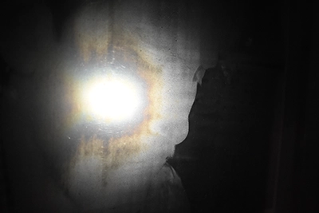

About Me

My name is Kason Haug, and I am an undergraduate student at Utah Valley University in Orem, Utah studying Art and Design, with an interest in web development design, hence this website you are on! On this site, you will find my personal portfolio and links to other sections of my work and personal life.
What to expect
Along with this mainly being my portfolio, in the future, I plan to occasionally update this as a personal archive with images, music, film recommendations, video tests, written memories, and thoughts on whatever comes to mind that I feel like sharing into this isolated space of the internet. Thank you!
What do I care about?
Some of my interests include:
- Contemporary art
- Surrealism
- Film theory
- Aesthetics
- Nature
- Cats
- Photography
- Music
- Architecture
- Geography
- Flags
- Media collecting
- Cultural criticism
- Political discourse
- History
Here are three words and their definitions that I'm currently interested in
- Allusions
- Indirect references to a person, place, event, or work of art or literature, made without explaining it in full.
- Nebulous
- Vague, unclear, or lacking definite form or boundaries.
- Mnemonic
- A device, such as a rhyme, acronym, or image, that helps you remember something.
Interested in becoming an art student at UVU?
Visit UVU's School of the Arts
School of the ArtsUtah Valley University
800 West University Parkway
Orem, UT 84058
1-801-863-7259
uvu.edu/arts
Dear Internet Surfer
Please feel welcomed to browse through my website that serves as my personal portfolio and amateur coding experience. Check out my work and If you would like to get in touch with me, please visit the contact page.